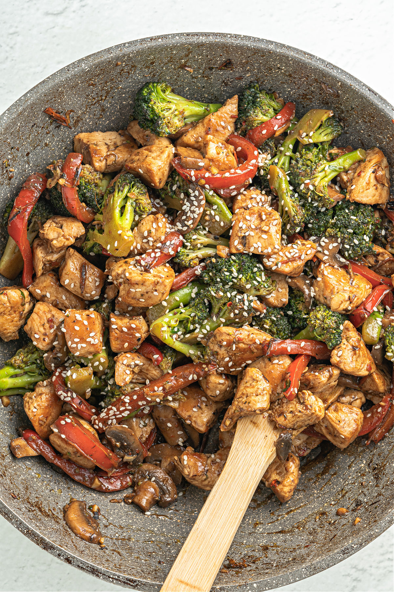

Stir Fry

Description
Stir fry is a chinese cooking technique that involves rapidly cooking a variety of ingredients in a Wok or skillet over high heat.
It is characterized by continuous stirring and tossing of the food as it cooks.
The dish consists of thinly sliced meat, vegtables, and sometimes noodles or rice.
It can be prepared in many ways, the result is a bright, flavorful, and colorful dish that is healthy and satisfying.
Ingredients
- Thinly sliced meat [Beef, chicken, pork,or shrimp]
- Vegtables
- Garlic and Ginger
- Soy sauce
- Cooking oil
Steps
- In a Wok or large skillet, heat the oil over high heat.
- Add the garlic and ginger and stir until fragrant
- Put in the sliced meat until cooked through and browned. Then set aside.
- Add vegtables to pan and cook for 3-5 mins until cooked but still crisp.
- Put the meat back in and cook for a 1-2 mins while adding soy sauce.
- Serve hot over noodles or rice.